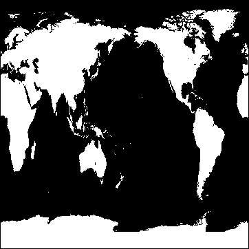

Cosmic RGB Image (Object Graphics)

An image object represents a mapping from a two-dimensional array of data values to a two dimensional array of pixel colors, resulting in a flat 2-D-scaled version of the image, drawn at Z = 0.
An IDLgrImage object is an atomic graphic object ; it is one of the basic drawable elements of the IDL Object Graphics system, and it is not a container for other objects.
Beginning with IDL 6.2, IDLgrImage renders an image by default using a texture-mapped polygon on graphics devices using the RGB color model, for a significant increase in functionality and performance. IDL continues to use a 2D bitmap primitive to draw an image on devices using the indexed color model, since texture mapping is not available on such devices.
Note: With the texture-mapping performance improvements of 6.2, interpolation results may differ slightly across graphics devices and from pre-6.2 results. See INTERPOLATE for details.
By default, IDLgrImage objects are drawn at Z=0 and are positioned and sized with respect to two points:
p1 = [LOCATION(0), LOCATION(1), 0]
p2 = [LOCATION(0) + DIMENSION(0), LOCATION(1) + DIMENSION(1), 0].
where LOCATION and DIMENSION are properties of the image object. These two points are transformed in three dimensions, and then projected onto the screen to form the opposite corners of a 2-D rectangle using screen space points designated as p1' and p2' :
[ [p1'[0], p1'[1]], [[p2'[0], p1'[1]],
[[p2'[0], p2'[1]], [[p1'[0], p2'[1]] ]
The image data is drawn on the display as a 2-D image within this 2-D rectangle whose sides are parallel to the screen sides. The image data is scaled in two dimensions (not rotated) to fit into this projected rectangle and then drawn with Z buffering disabled.
To draw an image with the current full 3D transformation (the same way other objects such as polygons are transformed), set the IDLgrImage TRANSFORM_MODE property to 1. See the IDLgrImage TRANSFORM_MODE property for details.
Objects are drawn to a destination device in the order that they are added (via the Add method) to the model, view, or scene that contains them. By default, image objects do not take into account the depth locations of other objects that may be included in the view object unless you enable depth testing (see DEPTH_TEST_DISABLE for details).
This means that objects that are drawn to the destination object (window or printer) after the image is drawn will appear to be in front of the image, even if they are located behind the image object. Since the image is drawn by default with depth testing disabled, you can think of the image primitive as ‘painting’ the image onto the screen without regard for other objects that might already have been drawn there.
This behavior can be changed by enabling depth testing to make the image primitive behave like other primitives such as polygons when they are drawn with depth testing enabled.
The IDLgrImage object supports tiling, which lets you display images that are too large to be read entirely into memory. For example, some satellite images can be over a gigabyte in size, which is impossible to fit into memory and display as a single unit on a typical computer. However, it can be displayed by segmenting it into smaller, more manageable image tiles.
When tiling is enabled for an IDLgrImage object, the image is initially created without any data. The image pixels are only loaded when a tile section comes into view through panning. Also, you can create an image pyramid to support level-of-detail (LOD) rendering for large images. This changes the resolution of an image when you zoom in or out within an image display. As you zoom out, successively smaller, less-detailed images can be displayed. This quickly provides a full view of the larger image, lets you choose an area of interest, and zoom in on that area. As you zoom in, progressively detailed image layers can be loaded. The IDLgrImage object is aware of the LOD required and will communicate that to the application when the application requests the tile visibility information.
When using Object Graphics, the original color table does not need to be modified. The color table (palette) pertains only to the image object, not the window, view, model, polygon, or text objects. Color annotations are usually applied to label each color level within the image or to allow color comparisons. This section shows how to label each color level on an indexed image in Object Graphics. As an example, an image of average world temperature is imported from the worldtmp.png file. This file does not contain a color table associated with this image, so a pre-defined color table will be applied. This table provides the colors for the polygons and text used to make a colorbar for this image. Each polygon uses the color of each level in the table. The text represents the average temperature (in Celsius) of each level.
Example Code:
See
applycolorbar_indexed_object.
pro
in the
examples/doc/objects
subdirectory of the IDL installation directory for code that duplicates this example. Run the example procedure by entering
applycolorbar_indexed_object
at the IDL command prompt or view the file in an IDL Editor window by entering
.EDIT applycolorbar_indexed_object.pro
.
| 1. | Determine the path to the worldtmp.png file: |
worldtmpFile = FILEPATH('worldtmp.png', $
SUBDIRECTORY = ['examples', 'demo', 'demodata'])
| 2. | Import the image from the worldtmp.png file into IDL: |
worldtmpImage = READ_PNG(worldtmpFile)
| 3. | Determine the size of the imported image: |
worldtmpSize = SIZE(worldtmpImage, /DIMENSIONS)
| 4. | Initialize the display objects necessary for an Object Graphics display: |
oWindow = OBJ_NEW('IDLgrWindow', RETAIN = 2, $
DIMENSIONS = [worldtmpSize[0], worldtmpSize[1]], $
TITLE = 'Average World Temperature (in Celsius)')
oView = OBJ_NEW('IDLgrView', $
VIEWPLANE_RECT = [0, 0, worldtmpSize[0], $
worldtmpSize[1]])
oModel = OBJ_NEW('IDLgrModel')
| 5. | Initialize the palette object, load the Rainbow18 color table into the palette, and then apply the palette to an image object: |
oPalette = OBJ_NEW('IDLgrPalette')
oPalette -> LoadCT, 38
oImage = OBJ_NEW('IDLgrImage', worldtmpImage, $
PALETTE = oPalette)
| 6. | Add the image to the model, then add the model to the view, and finally draw the view in the window: |
oModel -> Add, oImage
oView -> Add, oModel
oWindow -> Draw, oView
The following figure is displayed.
|
|
Before applying the color polygons and text of each level, you must first initialize their color values and their locations. The Rainbow18 color table has only 18 different color levels, but still has 256 elements. You can use the INDGEN routine to make an array of 18 elements ranging from 0 to 17 in value, where each element contains the index of that element. Then you can use the BYTSCL routine to scale these values to range from 0 to 255. The resulting array contains the initial color value (from 0 to 255) of the associated range (from 0 to 17, equalling 18 elements).
| 7. | Initialize the color level parameter: |
fillColor = BYTSCL(INDGEN(18))
| 8. | Initialize the average temperature of each level, which directly depends on the initial color value of each range. Temperature is linearly scaled to range from -60 to 40 Celsius. You can convert the resulting temperature value to a string variable to be used as text: |
temperature = STRTRIM(FIX(((20.*fillColor)/51.) - 60), 2)
When the fillColor variable in the previous statement is multiplied by the floating-point value of 20 (denoted by the decimal after the number), the elements of the array are converted from byte values to floating-point values. These elements are then converted to integer values with the FIX routine so the decimal part will not be displayed. The STRTRIM routine converts the integer values to string values to be displayed as text. The second argument to STRTRIM is set to 2 to note the leading and trailing black values should be trimmed away when the integer values are converted to string values.
With the polygon color and text now defined, you can determine their locations. You can use a polygon object to draw each polygon and text objects to display each element of text. The process is repetitive from level to level, so a FOR/DO loop is used to display the entire colorbar. Since each polygon and text is drawn individually within the loop, you only need to determine the location of a single polygon and an array of offsets for each step in the loop. The following two steps describe this process.
| 9. | Initialize the polygon and the text location parameters. Each polygon is 35 pixels in width and 18 pixels in height. The offset will move the y-location 18 pixels every time a new polygon is displayed: |
x = [5., 40., 40., 5., 5.]
y = [5., 5., 23., 23., 5.] + 5.
offset = 18.*FINDGEN(19) + 5.
| 10. | Initialize the polygon and text objects: |
oPolygon = OBJARR(18)
oText = OBJARR(18)
FOR i = 0, (N_ELEMENTS(oPolygon) - 1) DO BEGIN & $
oPolygon[i] = OBJ_NEW('IDLgrPolygon', x, $
y + offset[i], COLOR = fillColor[i], $
PALETTE = oPalette) & $
oText[i] = OBJ_NEW('IDLgrText', temperature[i], $
LOCATIONS = [x[0] + 3., y[0] + offset[i] + 3.], $
COLOR = 255*(fillColor[i] LT 255), $
PALETTE = oPalette) & $
ENDFOR
The & after BEGIN and the $ allow you to use the FOR/DO loop at the IDL command line. These & and $ symbols are not required when the FOR/DO loop in placed in an IDL program as shown in ApplyColorbar_Indexed_Object.pro in the examples/doc/objects subdirectory of the IDL installation.
| 11. | Add the polygons and text to the model, then add the model to the view, and finally redraw the view in the window: |
oModel -> Add, oPolygon
oModel -> Add, oText
oWindow -> Draw, oView
The following figure displays the colorbar annotation applied to the image.
|
|
| 12. | Clean up object references. When working with objects always remember to clean up any object references with the OBJ_DESTROY routine. Since the view contains all the other objects, except for the window (which is destroyed by the user), you only need to use OBJ_DESTROY on the view and the palette objects: |
OBJ_DESTROY, [oView, oPalette]
When using Object Graphics, colors can be defined just by the values of their red, green, and blue components. In this example, a color spectrum of additive and subtractive primary colors will be drawn on an RGB image for comparison with the colors in that image. The glowing_gas.jpg file (which is provided by the Hubble Heritage Team, made up of AURA, STScI, and NASA) contains an RGB image of an expanding shell of glowing gas surrounding a hot, massive star in our Milky Way Galaxy. This image contains all the colors of this spectrum. Complete the following steps for a detailed description of the process.
Example Code:
See
applycolorbar_rgb_object.
pro
in the
examples/doc/objects
subdirectory of the IDL installation directory for code that duplicates this example. Run the example procedure by entering
applycolorbar_rgb_object
at the IDL command prompt or view the file in an IDL Editor window by entering
.EDIT applycolorbar_rgb_object.pro
.
| 1. | Determine the path to the glowing_gas.jpg file: |
cosmicFile = FILEPATH('glowing_gas.jpg', $
SUBDIRECTORY = ['examples', 'data'])
| 2. | Import the image from the glowing_gas.jpg file into IDL: |
READ_JPEG, cosmicFile, cosmicImage
| 3. | Determine the size of the imported image. The image contained within this file is pixel-interleaved (the color information is contained within the first dimension). You can use the SIZE routine to determine the other dimensions of this image: |
cosmicSize = SIZE(cosmicImage, /DIMENSIONS)
| 4. | Initialize the display objects required for an Object Graphics display: |
oWindow = OBJ_NEW('IDLgrWindow', RETAIN = 2, $
DIMENSIONS = [cosmicSize[1], cosmicSize[2]], $
TITLE = 'glowing_gas.jpeg')
oView = OBJ_NEW('IDLgrView', $
VIEWPLANE_RECT = [0., 0., cosmicSize[1], $
cosmicSize[2]])
oModel = OBJ_NEW('IDLgrModel')
| 5. | Initialize the image object. The INTERLEAVE keyword is set to 0 because the RGB image is pixel-interleaved: |
oImage = OBJ_NEW('IDLgrImage', cosmicImage, $
INTERLEAVE = 0, DIMENSIONS = [cosmicSize[1], $
cosmicSize[2]])
| 6. | Add the image to the model, then add the model to the view, and finally draw the view in the window: |
oModel -> Add, oImage
oView -> Add, oModel
oWindow -> Draw, oView
The following image contains all of the colors of the additive and subtractive primary spectrum. A colorbar annotation can be added to compare the colors of that spectrum and the colors within the image. The color of each box is defined in the following array.
|
|
You can use the following to determine the color and location parameters for each polygon.
| 7. | Initialize the color parameters: |
fillColor = [[0, 0, 0], $ ; black
[255, 0, 0], $ ; red
[255, 255, 0], $ ; yellow
[0, 255, 0], $ ; green
[0, 255, 255], $ ; cyan
[0, 0, 255], $ ; blue
[255, 0, 255], $ ; magenta
[255, 255, 255]] ; white
| 8. | After defining the polygon colors, you can determine their locations. Initialize polygon location parameters: |
x = [5., 25., 25., 5., 5.]
y = [5., 5., 25., 25., 5.] + 5.
offset = 20.*FINDGEN(9) + 5.
The x and y variables pertain to the x and y locations (in pixel units) of each box of color. The offset maintains the spacing (in pixel units) of each box. Since the image is made up of mostly a black background, the x border of the colorbar is also determined to draw a white border around the polygons.
| 9. | Initialize location of colorbar border: |
x_border = [x[0] + offset[0], x[1] + offset[7], $
x[2] + offset[7], x[3] + offset[0], x[4] + offset[0]]
The y border is already defined by the y variable.
These parameters are used when initializing the polygon and polyline objects These objects will be used to draw the boxes of the color spectrum and the colorbar border. Each polygon is 20 pixels wide and 20 pixels high. The offset will move the y-location 20 pixels every time a new polygon is displayed.
| 10. | Initialize the polygon objects. The process is repetitive from level to level, so a FOR/DO loop will be used to display the entire colorbar. Since each polygon is drawn individually within the loop, you only need to determine the location of a single polygon and an array of offsets for each step in the loop: |
oPolygon = OBJARR(8)
FOR i = 0, (N_ELEMENTS(oPolygon) - 1) DO oPolygon[i] = $
OBJ_NEW('IDLgrPolygon', x + offset[i], y, $
COLOR = fillColor[*, i])
| 11. | The colorbar border is produced with a polyline object. This polyline object requires a z variable to define it slightly above the polygons and image. The z variable is required to place the polyline in front of the polygons. Initialize the polyline (border) object: |
z = [0.001, 0.001, 0.001, 0.001, 0.001]
oPolyline = OBJ_NEW('IDLgrPolyline', x_border, y, z, $
COLOR = [255, 255, 255])
| 12. | The polygon and polyline objects can now be added to the model and then displayed (re-drawn) in the window. Add the polygons and polyline to the model, then add the model to the view, and finally redraw the view in the window: |
oModel -> Add, oPolygon
oModel -> Add, oPolyline
oWindow -> Draw, oView
The following figure shows the colorbar annotation applied to the image.
|
|
| 13. | Clean up object references. When working with objects always remember to clean up any object references with the OBJ_DESTROY routine. Since the view contains all the other objects, except for the window (which is destroyed by the user), you only need to use OBJ_DESTROY on the view object: |
OBJ_DESTROY, oView
See IDLgrImage::Init .
Objects of this class have the following properties. See IDLgrImage Properties for details on individual properties.
|
|
In addition, objects of this class inherit the properties of all superclasses of this class.
This class has the following methods:
In addition, this class inherits the methods of its superclasses (if any).
See "Working with Image Objects" and "Mapping an Image onto Elevation Data" (Chapter 3,
Image Processing in IDL
in the
help/pdf
directory of your IDL installation) for a texture mapping example.
Binary images are composed of pixels having one of two values, usually zero or one. With most color tables, pixels having values of zero and one are displayed with almost the same color, such as with the default greyscale color table. Thus, a binary image is usually scaled to display the zeros as black and the ones as white.
The following example imports a binary image of the world from the continent_mask.dat binary file. In this image, the oceans are zeros (black) and the continents are ones (white). This type of image can be used to mask out (omit) data over the oceans. The image contains byte data values and is 360 pixels by 360 pixels.
Example Code:
See
displaybinaryimage_object.
pro
in the
examples/doc/objects
subdirectory of the IDL installation directory for code that duplicates this example. Run the example procedure by entering
displaybinaryimage
at the IDL command prompt or view the file in an IDL Editor window by entering
.EDIT displaybinaryimage.pro
.
| 1. | Determine the path to the continent_mask.dat file: |
file = FILEPATH('continent_mask.dat', $
SUBDIRECTORY = ['examples', 'data'])
| 2. | Initialize the image size parameter: |
imageSize = [360, 360]
| 3. | Use READ_BINARY to import the image from the file: |
image = READ_BINARY(file, DATA_DIMS = imageSize)
| 4. | Initialize the display objects: |
oWindow = OBJ_NEW('IDLgrWindow', RETAIN = 2, $
DIMENSIONS = imageSize, $
TITLE = 'A Binary Image, Not Scaled')
oView = OBJ_NEW('IDLgrView', $
VIEWPLANE_RECT = [0., 0., imageSize])
oModel = OBJ_NEW('IDLgrModel')
| 5. | Initialize the image object: |
oImage = OBJ_NEW('IDLgrImage', image)
| 6. | Add the image object to the model, which is added to the view, then display the view in the window: |
oModel -> Add, oImage
oView -> Add, oModel
oWindow -> Draw, oView
The resulting window should be all black (blank). The binary image contains zeros and ones, which are almost the same color (black). A binary image should be scaled prior to displaying in order to show the ones as white.
| 7. | Initialize another window: |
oWindow = OBJ_NEW('IDLgrWindow', RETAIN = 2, $
DIMENSIONS = imageSize, $
TITLE = 'A Binary Image, Scaled')
| 8. | Update the image object with a scaled version of the image: |
oImage -> SetProperty, DATA = BYTSCL(image)
| 9. | Display the view in the window: |
oWindow -> Draw, oView
The following figure shows the results of scaling this display.

| 10. | Clean up the object references. When working with objects always remember to clean up any object references with the OBJ_DESTROY routine. Since the view contains all the other objects, except for the window (which is destroyed by the user), you only need to use OBJ_DESTROY on the view object. |
OBJ_DESTROY, oView
Since greyscale images are composed of pixels of varying intensities, they are best displayed with color tables that progress linearly from black to white. IDL provides several such pre-defined color tables, but the default greyscale color table is generally suitable.
The following example imports a greyscale image from the convec.dat binary file. This greyscale image shows the convection of the Earth’s mantle. The image contains byte data values and is 248 pixels by 248 pixels. Since the data type is byte, this image does not need to be scaled before display. If the data was of any type other than byte and the data values were not within the range of 0 up to 255, the display would need to scale the image in order to show its intensities. Complete the following steps for a detailed description of the process.
Example Code:
See
displaygrayscaleimage_object.
pro
in the e
xamples/doc/objects
subdirectory of the IDL installation directory for code that duplicates this example. Run the example procedure by entering
displaygrayscaleimage
at the IDL command prompt or view the file in an IDL Editor window by entering
.EDIT displaygrayscaleimage.pro
.
| 1. | Determine the path to the convec.dat file: |
file = FILEPATH('convec.dat', $
SUBDIRECTORY = ['examples', 'data'])
| 2. | Initialize the image size parameter: |
imageSize = [248, 248]
| 3. | Using READ_BINARY , import the image from the file: |
image = READ_BINARY(file, DATA_DIMS = imageSize)
| 4. | Initialize the display objects: |
oWindow = OBJ_NEW('IDLgrWindow', RETAIN = 2, $
DIMENSIONS = imageSize, $
TITLE = 'A Greyscale Image')
oView = OBJ_NEW('IDLgrView', $
VIEWPLANE_RECT = [0., 0., imageSize])
oModel = OBJ_NEW('IDLgrModel')
| 5. | Initialize the image object: |
oImage = OBJ_NEW('IDLgrImage', image, /GREYSCALE)
| 6. | Add the image object to the model, which is added to the view, then display the view in the window: |
oModel -> Add, oImage
oView -> Add, oModel
oWindow -> Draw, oView
The following figure shows the resulting greyscale image display.
|
|
| 7. | Clean up the object references. When working with objects always remember to clean up any object references with the OBJ_DESTROY routine. Since the view contains all the other objects, except for the window (which is destroyed by the user), you only need to use OBJ_DESTROY on the view object. |
OBJ_DESTROY, oView
The following example imports an RGB image from the rose.jpg image file. This RGB image is a close-up photograph of a red rose and is pixel interleaved. This example extracts the three color channels of this image, and displays them as greyscale images in various locations within the same window. Complete the following steps for a detailed description of the process.
Example Code:
See
displaymultiples_object.
pro
in the
examples/doc/objects
subdirectory of the IDL installation directory for code that duplicates this example. Run the example procedure by entering
displaymultiples_object
at the IDL command prompt or view the file in an IDL Editor window by entering
.EDIT displaymultiples_object.pro
.
| 1. | Determine the path to the rose.jpg file: |
file = FILEPATH('rose.jpg', $
SUBDIRECTORY = ['examples', 'data'])
| 2. | Use QUERY_IMAGE to query the file to determine image parameters: |
queryStatus = QUERY_IMAGE(file, imageInfo)
| 3. | Set the image size parameter from the query information: |
imageSize = imageInfo.dimensions
| 4. | Use READ_IMAGE to import the image from the file: |
image = READ_IMAGE(file)
| 5. | Extract the channels (as images) from the pixel interleaved RGB image: |
redChannel = REFORM(image[0, *, *])
greenChannel = REFORM(image[1, *, *])
blueChannel = REFORM(image[2, *, *])
The LOCATION keyword to the Init method of the image object can be used to position an image within a window. The LOCATION keyword uses data coordinates, which are the same as device coordinates for images. Before initializing the image objects, you should initialize the display objects. The following steps display multiple images horizontally, vertically, and diagonally.
| 6. | Initialize the display objects: |
oWindow = OBJ_NEW('IDLgrWindow', RETAIN = 2, $
DIMENSIONS = imageSize*[3, 1], $
TITLE = 'The Channels of an RGB Image')
oView = OBJ_NEW('IDLgrView', $
VIEWPLANE_RECT = [0., 0., imageSize]*[0, 0, 3, 1])
oModel = OBJ_NEW('IDLgrModel')
| 7. | Now initialize the image objects and arrange them with the LOCATION keyword: |
oRedChannel = OBJ_NEW('IDLgrImage', redChannel)
oGreenChannel = OBJ_NEW('IDLgrImage', greenChannel, $
LOCATION = [imageSize[0], 0])
oBlueChannel = OBJ_NEW('IDLgrImage', blueChannel, $
LOCATION = [2*imageSize[0], 0])
| 8. | Add the image objects to the model, which is added to the view, then display the view in the window: |
oModel -> Add, oRedChannel
oModel -> Add, oGreenChannel
oModel -> Add, oBlueChannel
oView -> Add, oModel
oWindow -> Draw, oView
The following figure shows the resulting greyscale images.
|
|
These images can be displayed vertically in another window by first initializing another window and then updating the view and images with different location information.
| 9. | Initialize another window object: |
oWindow = OBJ_NEW('IDLgrWindow', RETAIN = 2, $
DIMENSIONS = imageSize*[1, 3], $
TITLE = 'The Channels of an RGB Image')
| 10. | Change the view from horizontal to vertical: |
oView -> SetProperty, $
VIEWPLANE_RECT = [0., 0., imageSize]*[0, 0, 1, 3]
| 11. | Change the locations of the channels: |
oGreenChannel -> SetProperty, LOCATION = [0, imageSize[1]]
oBlueChannel -> SetProperty, LOCATION = [0, 2*imageSize[1]]
| 12. | Display the updated view within the new window: |
oWindow -> Draw, oView
The following figure shows the resulting greyscale images.
|
|
These images can also be displayed diagonally in another window by first initializing the other window and then updating the view and images with different location information.The LOCATION can also be used to create a display overlapping images. When overlapping images in Object Graphics, you must remember the last image added to the model will be in front of the previous images.
| 13. | Initialize another window object: |
oWindow = OBJ_NEW('IDLgrWindow', RETAIN = 2, $
DIMENSIONS = imageSize*[2, 2], $
TITLE = 'The Channels of an RGB Image')
| 14. | Change the view to prepare for a diagonal display: |
oView -> SetProperty, $
VIEWPLANE_RECT = [0., 0., imageSize]*[0, 0, 2, 2]
| 15. | Change the locations of the channels: |
oGreenChannel -> SetProperty, $
LOCATION = [imageSize[0]/2, imageSize[1]/2]
oBlueChannel -> SetProperty, $
LOCATION = [imageSize[0], imageSize[1]]
| 16. | Display the updated view within the new window: |
oWindow -> Draw, oView
The following figure shows the resulting greyscale images.
|
|
| 17. | Clean up the object references. When working with objects always remember to clean up any object references with the OBJ_DESTROY routine. Since the view contains all the other objects, except for the window (which is destroyed by the user), you only need to use OBJ_DESTROY on the view object. |
OBJ_DESTROY, oView
The following example reads in two medical images, a computed tomography (CT) file that contains structural information, and a PET (positron emission tomography) file that contains metabolic data. A color table is applied to the PET file, and the transparency is set using the ALPHA_CHANNEL property. The PET image object is then overlaid on top of the base CT image. This is done by adding the transparent PET image to the model after (and therefore displayed in front of) the base CT image.
Example Code:
See
alphaimage_obj_doc.pro
in the
examples/doc/objects
subdirectory of the IDL installation directory for code that duplicates this example. Run the example procedure by entering
alphaimage_obj_doc
at the IDL command prompt or view the file in an IDL Editor window by entering
.EDIT alphaimage_obj_doc.pro
.
To replicate this example, create a new .pro file and complete the following steps:
| 1. | Load CT and PET images and get the image dimensions. |
file_pt = FILEPATH('head_pt.dcm', $
SUBDIRECTORY=['examples', 'data'])
file_ct = FILEPATH('head_ct.dcm', $
SUBDIRECTORY=['examples', 'data'])
img_pt = READ_DICOM(file_pt)
img_ct = READ_DICOM(file_ct)
dims_ct = SIZE(img_ct, /DIMENSIONS)
dims_pt = SIZE(img_pt, /DIMENSIONS)
| 2. | Check for dimension equality and resize if different. |
IF dims_pt[0] NE dims_ct[0] THEN BEGIN
x = dims_ct[0]/dims_pt[0]
img_pt = REBIN(img_pt, dims_pt[0]*x, dims_pt[1]*x)
dims_pt = x*dims_pt
If dims_pt[0] NE dims_ct[0] THEN BEGIN
status = DIALOG_MESSAGE ('Incompatible images', /ERROR)
ENDIF
ENDIF
| 3. | Change the data to byte type before creating the base CT image. |
img_ct = BYTSCL(img_ct)
oImageCT = OBJ_NEW('IDLgrImage', img_ct)
| 4. | Create display objects and display the CT image. |
oWindow = OBJ_NEW('IDLgrWindow', RETAIN=2, $
DIMENSIONS=[dims_ct[0], dims_ct[1]], TITLE='CT Image')
oView = OBJ_NEW('IDLgrView', VIEWPLANE_RECT=[0., 0., $
dims_ct[0], dims_ct[1]])
oModel = OBJ_NEW('IDLgrModel')
oModel->Add, oImageCT
oView->Add, oModel
oWindow->Draw, oView
| 5. | Create a palette object and load the red-temperature table. |
oPalette = OBJ_NEW('IDLgrPalette')
oPalette->Loadct, 3
| 6. | Change the data type to byte and create the PET image object. Set the BLEND_FUNCTION and ALPHA_CHANNEL properties to support image transparency. |
img_pt = BYTSCL(img_pt)
oImagePT = OBJ_NEW('IDLgrImage', img_pt, $
PALETTE=oPalette, BLEND_FUNCTION=[3,4], $
ALPHA_CHANNEL=0.50)
| 7. | Create a second window, add the semi-transparent image to the model containing the original image and display the overlay. |
oWindow2 = OBJ_NEW('IDLgrWindow', RETAIN=2, $
DIMENSIONS=[dims_pt[0], dims_pt[1]], $
LOCATION=[dims_ct[0]+10, 0], TITLE='CT/PET Transparency')
oModel -> Add, oImagePT
oWindow2 -> Draw, oView
| 8. | Clean-up object references. |
OBJ_DESTROY, [oView, oImageCT, oImagePT]
The results of this example are shown in the following figure.
|
|
The following example shows the additive effects of displaying an image object with alpha channel data and an image with an ALPHA_CHANNEL property setting. In this example, the alpha channel is used to mask out values, and the ALPHA_CHANNEL property is used to control the object transparency. However, it is easy to modify the code and investigate the relationship between setting image transparency using the alpha channel data and ALPHA_CHANNEL property. For example, defining 50% transparency for each results in 25% opacity overall.
The two initial images are displayed in the following figure. The black portion of the land classification image (left) will be removed and this image will then be overlaid on top of the map image.
|
|
Example Code:
See
alphacomposite_image_doc.pro
in the
examples/doc/objects
subdirectory of the IDL installation directory for code that duplicates this example. Run the example procedure by entering
alphacomposite_image
at the IDL command prompt or view the file in an IDL Editor window by entering
.EDIT alphacomposite_image.pro
.
To replicate this example, create a new .pro file complete the following steps:
| 1. | Open the political map, the base image. |
mapFile = FILEPATH('afrpolitsm.png', $
SUBDIRECTORY = ['examples', 'data'])
mapImg = READ_PNG(mapFile, mapR, mapG, mapB)
| 2. | Assign the color table of the map image to a palette object. |
mapPalette = OBJ_NEW('IDLgrPalette', mapR, mapG, mapB)
| 3. | Create an image object containing the map data. |
oMapImg = OBJ_NEW('IDLgrImage', mapImg, $
DIMENSIONS=[600, 600], PALETTE=mapPalette)
| 4. | Open the land cover characteristics image. |
landFile = FILEPATH('africavlc.png', $
SUBDIRECTORY = ['examples', 'data'])
landImg = READ_PNG(landFile, landR, landG, landB)
landImgDims = SIZE(landImg, /DIMENSIONS)
| 5. | To mask out the black values of the land classification image, create a 4 channel array for the red, green, blue, and alpha data. |
alphaLand = BYTARR(4, landImgDims[0], landImgDims[1],$ /NOZERO)
| 6. | Get the red, green and blue values used by the image and assign them to the first three channels of the alpha image array. |
alphaLand[0, *, *] = landR[landImg]
alphaLand[1, *, *] = landG[landImg]
alphaLand[2, *, *] = landB[landImg]
| 7. | Mask out the black pixels with a value of 0. Multiply the mask value by 255 for complete opacity. You could set this to a value between 0 (completely transparent) and 255 (opaque) to control the transparency. Any value set here will be combined with any value set for the ALPHA_CHANNEL property on the image object. |
mask = (landImg GT 0)
alphaLand [3, *, *] = mask*255B
| 8. | Create the semi-transparent image object. ALPHA_CHANNEL values can range from 0.0 (transparent) to 1.0 (opaque). The image will appear semi-transparent when the BLEND_FUNCTION property is set to [3,4]. |
oAlphaLand = OBJ_NEW('IDLgrImage', alphaLand, $
DIMENSIONS=[600, 600], BLEND_FUNCTION=[3,4], $
ALPHA_CHANNEL=0.35)
| 9. | Create the display objects. |
oWindow = OBJ_NEW('IDLgrWindow', $
DIMENSIONS=[600, 600], RETAIN=2, $
TITLE='Overlay of Land Cover Transparency')
viewRect = [0, 0, 600, 600]
oView = OBJ_NEW('IDLgrView', VIEWPLANE_RECT=viewRect)
oModel = OBJ_NEW('IDLgrModel')
| 10. | Add the semi-transparent image to the model after the base image. |
oModel->Add, oMapImg
oModel->Add, oAlphaLand
oView->Add, oModel
oWindow->Draw, oView
| 11. | Clean up objects. |
OBJ_DESTROY, [oView, oMapImg, oAlphaLand, mapPalette]
The results appear in the following figure.
|
|
Note: You can use control points to warp the images and properly align the transparent image over the map image. See Warping Image Objects for details.
Object Graphics allows precise control over the color palettes used to display image objects. By initializing a palette object, both the reference image object and the transparent, warped image object can be displayed using individual color palettes.
The following example warps an African land-cover characteristics image to a political map of the continent. After displaying the images and selecting control points in each image using the XROI utility, the resulting warped image is altered to include an alpha channel, enabling transparency. Image objects are then created and displayed in an IDL Obj ect Graphics display. Complete the following steps for a detailed description of the process.
Example Code:
See
transparentwarping_object.
pro
in the
examples/doc/objects
subdirectory of the IDL installation directory for code that duplicates this example. Run the example procedure by entering
transparentwarping_object
at the IDL command prompt or view the file in an IDL Editor window by entering
.EDIT transparentwarping_object.pro
.
| 1. | Select the political map image. This is the reference image to which the land cover image will be warped: |
mapFile= FILEPATH('afrpolitsm.png', $
Subdirectory = ['examples', 'data'])
| 2. | Use READ_PNG routine to read in the file. Specify mapR, mapG, mapB to read in the image’s associated color table: |
mapImg = READ_PNG(mapFile, mapR, mapG, mapB)
| 3. | Using IDLgrPalette::Init , assign the image’s color table to a palette object, which will be applied to an image object in a later step: |
mapPalette = OBJ_NEW('IDLgrPalette', mapR, mapG, mapB)
| 4. | Select and open the land cover input image, which will be warped to the map: |
landFile = FILEPATH('africavlc.png', $
Subdirectory = ['examples', 'data'])
landImg = READ_PNG (landFile, landR, landG, landB)
This section desc ribes using the XROI utility to select corresponding control points in the two images. The arrays of control points in the input image, ( X i , Y i ), will be mapped to the array of points selected in the reference image, ( X o , Y o ) .
Note: The X i and Y i vectors and the X o and Y o vectors must be the same length, meaning that you must select the same number of control points in the reference image as you select in the input image. The control points must also be selected in the same order since the point X i1 , Y i1 will be warped to X o1 , Y o1 .
The following figure shows the points to be selected in the input image.
|
|
Reasonably precise warping of the land classification image to the political map requires selecting numerous control points because of the irregularity of the continent’s border. Select the control points in the land classification image as described in the following steps.
| 1. | Load the image and its associated color table into the XROI utility, specifying the REGIONS_OUT keyword to save the region defined by the control points in the landROIout object: |
XROI, landImg, landR, landG, landB, $
REGIONS_OUT = landROIout, /BLOCK
Select the Draw Polygon button from the XROI utility toolbar shown in the following figure. Position the crosshairs symbol over CP1, shown in the previous figure, and click the left mouse button. Repeat this action for each successive control point. After selecting the sixteenth control point, position the crosshairs over the first point selected and click the right mouse button to close the region. Your display should appear similar to the following figure.
|
|
It is of no concern that portions of the continent lie outside the polygonal boundary. The EXTRAPOLATE keyword to WARP_TRI enables warping of the image areas lying outside of the boundary of control points. However, images requiring more aggressive warp models may not have good results outside of the extent of the control points when WARP_TRI is used with the /EXTRAPOLATE keyword.
| 2. | Close the XROI window and assign the landROIout object data to the X i and Y i control point vectors: |
landROIout -> GetProperty, DATA = landROIdata
Xi = landROIdata[0,*]
Yi = landROIdata[1,*]
The following figure displays the corresponding control points to be selected in the reference image of the political map. These control points will make up the X o and Y o arrays required by the IDL warping routines.
|
|
| 3. | Load the image of the political map and its associated color table into the XROI utility, specifying the REGIONS_OUT keyword to save the selected region in the mapROIout object: |
XROI, mapImg, mapR, mapG, mapB, $
REGIONS_OUT=mapROIout,/BLOCK
Select the Draw Polygon button from the XROI utility toolbar. Position the crosshairs symbol over CP1, shown in the previous figure, and click the left mouse button. Repeat this action for each successive control point. After selecting the sixteenth control point, position the crosshairs over the first point selected and click the right mouse button to close the region. Your display should appear similar to the following figure.
|
|
| 4. | Close the XROI window and assign the mapROIout object data to the X o and Y o control point vectors: |
mapROIout -> GetProperty, DATA=mapROIdata
Xo = mapROIdata[0,*]
Yo = mapROIdata[1,*]
The following section describes warping the land cover image to the political map and creating image objects. The resulting warped image will then be made into a transparency by creating an alpha channel for the image. Finally, the transparent object will be displayed as an overlay to the original political map.
| 1. |
Warp the input image,
landImg
, onto the reference image using
WARP_TRI
. This function uses the irregular grid of the reference image, defined by
X
o
, Y
o
,
as a basis for triangulation, defining the surfaces associated with (
X
o
, Y
o
, X
i
) and (
X
o
, Y
o
, Y
i
). Each pixel in the input image is then transferred to the appropriate position in the resulting output image as designated by interpolation. Using the WARP_TRI syntax,
|
Result
= WARP_TRI( Xo, Yo, Xi, Yi,
Image
[, OUTPUT_SIZE=vector][, /QUINTIC] [, /EXTRAPOLATE] )
set the OUTPUT_SIZE equal to the reference image dimensions since this image forms the basis of the warped, output image. Use the EXTRAPOLATE keyword to display the portions of the image which fall outside of the boundary of selected control points:
warpImg = WARP_TRI(Xo, Yo, Xi, Yi, landImg, $
OUTPUT_SIZE=[600, 600], /EXTRAPOLATE)
| 2. | While not required, you can quickly check the precision of the warp in a Direct Graphics display before proceeding with creating a transparency by entering the following lines: |
DEVICE, DECOMPOSED = 0
TVLCT, landR, landG, landB
WINDOW, 3, XSIZE = 600, YSIZE = 600, $
TITLE = 'Image Warped with WARP_TRI'
TV, warpImg
Precise control point selection results in accurate warping. If there is little distortion, as in the following figure, control points were successfully selected in nearly corresponding positions in both images.
|
|
| 3. | A transparent image object must be a greyscale or an RGB (24-bit) image containing an alpha channel. The alpha channel controls the transparency of the pixels. See IDLgrImage::Init for more information. |
The following lines convert the warped image and its associated color table into a RGB image containing four channels (red, green, blue, and alpha). First, get the dimensions of the warped image and then use BYTARR to create alphaWarp, a 4-channel by xdim by ydim array, where ( xdim, ydim ) are the dimensions of the warped image:
warpImgDims = SIZE(warpImg, /Dimensions)
alphaWarp = BYTARR(4, warpImgDims[0], warpImgDims[1], /NOZERO)
| 4. | Load the red, green and blue channels of the warped land characteristics image into the first three channels of the alphaWarp array: |
alphaWarp[0, *, *] = landR[warpImg]
alphaWarp[1, *, *] = landG[warpImg]
alphaWarp[2, *, *] = landB[warpImg]
| 5. | Define the transparency of the alpha channel. First, create an array, masking out the black background of the warped image (where pixel values equal 0) by retaining only pixels with values greater than 0: |
mask = (warpImg GT 0)
Apply the resulting mask to the alpha channel, the fourth channel of the array. This channel creates a 50% transparency of the pixels of the first three channels (red, green, blue) of the alphaWarp by multiplying the mask by 128B (byte). Alpha channel values range from 0 (completely transparent) to 255 (completely opaque):
alphaWarp [3, *, *] = mask*128B
You can set the transparency of an entire image. To set the transparency of
all
pixels at 50% in this example, your could replace the two previous steps with the following two lines:
mask = BYTARR(s[0], s[1]) + 128
alphaWarp
[3, *, *] = mask
| 6. | Initialize the transparent image object using IDLgrImage::Init . Specify the BLEND_FUNCTION property of the image object to control how the alpha channel is interpreted. Setting the BLEND_FUNCTION to [3, 4] allows you to see through the foreground image to the background. The foreground opacity is defined by the alpha channel value, specified in the previous step: |
oAlphaWarp = OBJ_NEW('IDLgrImage', alphaWarp, $
DIMENSIONS = [600, 600], BLEND_FUNCTION = [3, 4])
| 7. | Initialize the reference image object, applying the palette created earlier: |
oMapImg = OBJ_NEW('IDLgrImage', mapImg, $
DIMENSIONS = [600,600], PALETTE = mapPalette)
| 8. | Using IDLgrWindow::Init , initialize a window object in which to display the images: |
oWindow = OBJ_NEW('IDLgrWindow', DIMENSIONS = [600, 600], $
RETAIN = 2, TITLE = 'Overlay of Land Cover Transparency')
| 9. | Create a view object using IDLgrView::Init . The VIEWPLANE_RECT keyword controls the image display in the Object Graphics window. First create an array, viewRect , which specifies the x-placement , y‑placement , width, and height of the view surface. The values 0, 0 place the (0, 0) coordinate of viewing surface in the lower-left corner of the Object Graphics window: |
viewRect = [0, 0, 600, 600]
oView = OBJ_NEW('IDLgrView', VIEWPLANE_RECT = viewRect)
| 10. | Using IDLgrModel::Init , initialize a model object to which the images will be applied. Add the base image and the transparent alpha image to the model: |
oModel = OBJ_NEW('IDLgrModel')
oModel -> Add, oMapImg
oModel -> Add, oAlphaWarp
Image objects appear in the Object Graphics window in the order in which they are added to the model. If a transparent object is added to the model before an opaque object, it will not be visible.
| 11. | Add the model, containing the images, to the view and draw the view in the window: |
oView -> Add, oModel
oWindow -> Draw, oView
The following figure shows the warped image transparency overlaid onto the original reference image, the political map.
|
|
| 12. | Use OBJ_DESTROY to clean up unneeded object references including the region objects: |
OBJ_DESTROY, [oView, oMapImg, oAlphaWarp, $
mapPalette, landROIout, mapROIout]
This example maps an image containing world elevation data onto the surface of a sphere and displays the result using the XOBJVIEW utility. This utility automatically creates the window object and the view object. Therefore, this example creates an object based on IDLgrModel that contains the sphere, the image and the image palette, as shown in the conceptual representation in the following figure.
|
|
Complete the following steps for a detailed description of the process.
Example Code:
See
maponsphere_object.
pro
in the
examples/doc/objects
subdirectory of the IDL installation directory for code that duplicates this example. Run the example procedure by entering
maponsphere_object
at the IDL command prompt or view the file in an IDL Editor window by entering
.EDIT maponsphere_object.pro
.
| 1. | Select the world elevation image. Define the array, read in the data and close the file. |
file = FILEPATH('worldelv.dat', $
SUBDIRECTORY = ['examples', 'data'])
image = READ_BINARY(file, DATA_DIMS = [360, 360])
| 2. | Use the MESH_OBJ procedure to create a sphere onto which the image will be mapped. The following invocation of MESH_OBJ uses a value of 4, which represents a spherical mesh: |
MESH_OBJ, 4, vertices, polygons, REPLICATE(0.25, 101, 101)
When the MESH_OBJ procedure completes, the vertices and polygons variables contain the mesh vertices and polygonal mesh connectivity information, respectively. Although our image is 360 by 360, we can texture map the image to a mesh that has fewer vertices. IDL interpolates the image data across the mesh, retaining all the image detail between polygon vertices. The number of mesh vertices determines how close to perfectly round the sphere will be. Fewer vertices produce a sphere with larger facets, while more vertices make a sphere with smaller facets and more closely approximates a perfect sphere. A large number of mesh vertices will increase the time required to draw the sphere. In this example, MESH_OBJ produces a 101 by 101 array of vertices that are located in a sphere shape with a radius of 0.25.
| 3. | Initialize the display objects. In this example, it is necessary to define a model object that will contain the sphere, the image and the color table palette. Using the syntax, oNewObject = OBJ_NEW(' Class_Name ') , create the model, palette and image objects: |
oModel = OBJ_NEW('IDLgrModel')
oPalette = OBJ_NEW('IDLgrPalette')
oPalette -> LOADCT, 33
oPalette -> SetRGB, 255, 255, 255, 255
oImage = OBJ_NEW('IDLgrImage', image, PALETTE = oPalette)
The previous lines initialize the oPalette object with the color table and then set the final index value of the red, green and blue bands to 255 (white) in order to use white (instead of black) to designate the highest areas of elevation. The palette object is created before the image object so that the palette can be applied when initializing the image object. For more information, see IDLgrModel::Init , IDLgrPalette::Init and IDLgrImage::Init .
| 4. | Create texture coordinates that define how the texture map is applied to the mesh. A texture coordinate is associated with each vertex in the mesh. The value of the texture coordinate at a vertex determines what part of the texture will be mapped to the mesh at that vertex. Texture coordinates run from 0.0 to 1.0 across a texture, so a texture coordinate of [0.5, 0.5] at a vertex specifies that the image pixel at the exact center of the image is mapped to the mesh at that vertex. |
In this example, we want to do a simple linear mapping of the texture around the sphere, so we create a convenience vector that describes the mapping in each of the texture’s x- and y- directions, and then create these texture coordinates:
vector = FINDGEN(101)/100.
texure_coordinates = FLTARR(2, 101, 101)
texure_coordinates[0, *, *] = vector # REPLICATE(1., 101)
texure_coordinates[1, *, *] = REPLICATE(1., 101) # vector
The code above copies the convenience vector through the array in each direction.
| 5. | Enter the following line to initialize a polygon object with the image and geometry data using the IDLgrPolygon::Init function. Set SHADING = 1 for gouraud (smoother) shading. Set the DATA keyword equal to the sphere defined with the MESH_OBJ function. Set COLOR to draw a white sphere onto which the image will be mapped. Set TEXTURE_COORD equal to the texture coordinates created in the previous steps. Assign the image object to the polygon object using the TEXTURE_MAP keyword and force bilinear interpolation: |
oPolygons = OBJ_NEW('IDLgrPolygon', SHADING = 1, $
DATA = vertices, POLYGONS = polygons, $
COLOR = [255, 255, 255], $
TEXTURE_COORD = texure_coordinates, $
TEXTURE_MAP = oImage, /TEXTURE_INTERP)
When mapping an image onto an IDLgrPolygon object, you must specify both TEXTURE_MAP and TEXTURE_COORD keywords.
| 6. | Add the polygon containing the image and the palette to the model object: |
oModel -> ADD, oPolygons
| 7. | Rotate the model -90° along the x -axis and y -axis: |
oModel -> ROTATE, [1, 0, 0], -90
oModel -> ROTATE, [0, 1, 0], -90
| 8. | Display the results using XOBJVIEW , an interactive utility allowing you to rotate and resize objects: |
XOBJVIEW, oModel, /BLOCK
|
|
After displaying the object, you can rotate the sphere by clicking in the display window and dragging your mouse. Select the magnify button and click near the middle of the sphere. Drag your mouse away from the center of the display to magnify the image or toward the center of the display to shrink the image. Select the left-most button on the XOBJVIEW toolbar to reset the display. The previous figure shows a rotated and magnified view of the world elevation object.
| 9. | After closing the XOBJVIEW display, remove unneeded object references: |
OBJ_DESTROY, [oModel, oImage, oPalette]
This example takes a 5000 by 5000 pixel JPEG file containing an aerial photograph of Chicago’s O’Hare International Airport and creates a JPEG2000 file from the data. This file type provides inherent support for image tiles.
Example Code:
See
tilingjp2_doc.
pro
in the
examples/doc/objects
subdirectory of the IDL installation directory for the tiling application code. Run the example procedure by entering
tilingjp2_doc
at the IDL command prompt or view the file in an IDL Editor window by entering
.EDIT tilingjp2_doc.pro
.
Note: The first time you run this application, it generates the JPEG2000 file. This might take a noticeable amount of time, depending on your system speed. However, once the JPEG2000 image is created, this file will be used instead of being recreated.
The following figure shows the O’Hare image. When the application opens, the view is positioned in the upper-left corner of the full-resolution image.
|
|
|
5.0 |
Introduced |
|
5.6 |
Added CLIP_PLANES property |
|
6.2 |
Removed NO_COPY property and documented it as an IDLgrImage::Init keyword. Added ALPHA_CHANNEL, DEPTH_OFFSET, RENDER_METHOD, TILE_COLOR, TILE_CURRENT_LEVEL, TILE_DIMENSIONS, TILE_LEVEL_MODE, TILE_NUM_LEVELS, TILE_SHOW_BOUNDARIES, TILED_IMAGE_DIMENSIONS, TILING, and TRANSFORM_MODE properties Added DeleteTileData and SetTileData methods |
|
6.4 |
Added IMAGE_1D, INTERNAL_DATA_TYPE, SHADER, and TILE_BORDER_SIZE properties Added ReadFilteredData and TileDataLoaded methods |